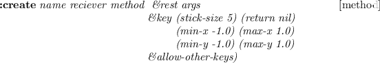
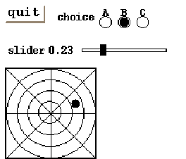
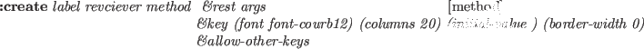
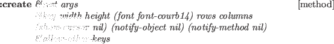
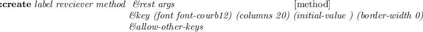

panel-item [class]
:super xwindow
:slots (pos notify-object notify-method
fontid label labeldots)
-
- Panel-item is an abstract class for all kinds of panel-item windows
to invoke notify-object's notify-method when item-specific
event occurs.
:notify &rest args [method]
-
-
invokes notify-object's notify-method.
Responsive events and arguments passed to notify-method
are item specific:
- button-item
- The button is pressed and released
in the same button-item;
the argument is the button-item object.
- menu-button-item
- A menu item is selected;
the argument is the menu-button-item object.
- choice-item
- A new choice button is selected; the arguments are
the choice-item object and the index number of the choice.
- text-item
- A newline or return is entered; the arguments are
the text-item object and the entire line (string).
- slider-item
- The slider nob is grabbed and moved; the arguments are
the slider-item object and the new value.
- joystick-item
- The joystick is grabbed and moved; the arguments are
the slider-item object, the new x and y values.

-
- creates a panel-item.
As panel-item is an abstract class,
this method should only be called by the subclasses
via send-super.
button-item [class]
:super panel-item
:slots
-
- button-item is the simplest panel-item.
Button-item has a rectangular box and a label string in it.
When clicked, button-item invokes notify-object's notify-method
with the panel-item object as the only argument.
:draw-label &optional (state :top) (color bg-color) (border 2) (offset) [method]
-
-
draws button-item's label.

-
- creates a button-item.
If button's width and height are not given,
the sizes are automatically set to accomodate the label string
drawn with the given font.
Though the border-width is defaulted to 0,
pseudo 3D representation embosses the button.
The background color and font are defaulted to the ones defined for
the parent window, i.e. a panel.
:ButtonPress event [method]
-
-
changes the background color to gray, as if the button.
:ButtonRelease event [method]
-
-
changes event's background color to normal.
menu-button-item [class]
:super button-item
:slots (items item-dots item-labels
charwidth charheight
menu-window window-pos high-light)
-
- defines a pulldown menu.
Though a menu-button-item looks like a button-item,
the menu-button-item activates associated menu-panel
below the button when it is pressed,
instead of sending an immediate message to the notify-object.
The actual message is sent when the mouse button is released on
one of the menu items.
![\begin{emtabbing}
{\bf :create}
\it\= label reciever method \\lq [method]\\
\>\&...
...key (menu nil) (items) (state :flat)\\
\>\&allow-other-keys
\rm
\end{emtabbing}](manual-img115.png)
-
- creates a pulldown menu button.
Receiver and method arguments has no effect.
:ButtonPress event [method]
-
-
reverses the appearance of the pulldown-menu
and exposes the associated menu-panel below the button.
:ButtonRelease event [method]
-
-
unmaps the menu-panel below this button
and reverts the appearance of the button.
bitmap-button-item [class]
:super button-item
:slots (pixmap-id bitmap-width bitmap-height)
-
- Though bitmap-button-item's function is similar to
the button-item, its appearance is different.
Instead of drawing a simple label string on the button, as is the
case for button-item,
bitmap-button-item is drawn by a pixmap which is loaded
from a bitmap-file when the button is created.
:draw-label &optional (state :flat) (color bg-color) (border 2) [method]
-
-
draws a bitmap/pixmap on the button.
![\begin{emtabbing}
{\bf :create}
\it bitmap-file reciever method \= \&rest args
\\lq [method]\\
\>\&key width height\\
\>\&allow-other-keys)\rm
\end{emtabbing}](manual-img116.png)
-
- creates bitmap-button-item.
The first argument, bitmap-file replaces the label argument
of button-item.
:draw-label &optional (state :flat) (color bg-color) (border 2) [method]
-
-
draw a bitmap/pixmap on the button.
:create-bitmap-from-file fname [method]
-
-
creates pixmap from the bitmap file named fname,
and stores its id in pixmap-id.
choice-item [class]
:super button-item
:slots (choice-list active-choice transient-choice
choice-dots choice-pos button-size)
-
- choice-item is a set of round choice buttons.
One choice is always active, and only one choice can become active at
the same time.
choice-item provides the similar function as radio-buttons.

-
- create a choice-item-button. Each choice button is a circle of
radius button-size.
When a new choice is selected, notify-object's notify-method
is invoked with the choice-item object and the index of the choice selected.
:value &optional (new-choice) (invocation) [method]
-
-
If new-choice is given, it is set as the current active choice,
and the corresponding circle is filled black.
If invocation is also specified, notify-object's notify-method
is invoked.
:Value returns the current (or new) choice index.
:draw-active-button &optional
(old-choice active-choice) (new-choice active-choice) [method]
-
-
draw active button.
:buttonPress event [method]
-
-
If the mouse button is pressed on any of the choice buttons,
its index is recorded in transient-choice.
No further action is taken until the mouse button is released.
:buttonRelease event [method]
-
-
If the mouse button is released on the same button which is already pressed,
the active-choice is updated and
notify-object's notify-method is invoked.
slider-item [class]
:super panel-item
:slots (min-value max-value value
minlabel maxlabel valueformat
bar-x bar-y bar-width bar-height valuedots label-base
nob-x nob-moving
charwidth)
-
- While choice-item is used to select a discrete value,
slider-item is used for the continuous value in the range
between min-value and max-value.
Each moment the value is changed, notify-object's notify-method
is invoked with the slider-item object and the new value as the arguments.

-
- creates slider-item.
The sliding knob is displayed as a small black rectangle on a bar.
The left end represents the min value and the right end max value.
The length of the bar stretches for the span dots.
The current value is displayed to the right of the slider-item label
in the value-format.
:value &optional newval invocation [method]
-
-
If newval is given, it is set as the current value,
and the knob is slided to the corresponding location.
If invocation is also specified non nil,
notify-object's notify-method is invoked.
:Value returns the current (or new) value.
joystick-item [class]
:super panel-item
:slots (stick-size min-x min-y max-x max-y
center-x center-y stick-x stick-y
value-x value-y
stick-return stick-grabbed
fraction-x fraction-y)
-
- joystick-item can be regarded as the two-dimensional slider-item.
Two continuous values can be specified by the moving black circle
on the coaxial chart that looks like a web (Fig. 20).

-
- Stick-size is the radius of the stick's black circle.
The sizes of the circles in the coaxial chart are determined
according to the width and height of the joystick-item window.
If return is non-NIL,
the joystick returns to the origin when the mouse button is released.
Otherwise, the joystick remains at the released position.
:value &optional (newx) (newy) (invocation) [method]
-
-
If both newx and newy are given, they are
set as the current values,
and the joystick moves to the corresponding location
on the coaxial chart.
If invocation is also specified non nil,
notify-object's notify-method is invoked
with the joystick-item object and x and y values as the arguments.
:Value returns the list of current (or new) values.
The following short program shows how to use panel-items
described above, and Fig. 20 depicts how they
appear in a panel.
(in-package "X")
(defclass testPanel :super panel
:slots (quit joy choi sli))
(defmethod testPanel
(:create (&rest args)
(send-super* :create :width 210 :height 180
:font font-courb12 args)
(send-super :create-item button-item "quit" self :quit :font font-courb14)
(send-super :create-item choice-item "choice" self :choice
:choices '(" A " " B " " C ")
:font font-courb12)
(send-super :create-item slider-item "slider" self :slider
:span 90)
(send-super :create-item joystick-item "joy" self :joy)
self)
(:choice (obj c) (format t "choice: ~S ~d~%" obj c))
(:slider (obj val) (format t "slider: ~S ~s~%" obj val))
(:joy (obj x y) (format t "joy: ~S ~s ~s~%" obj x y)) )
(instance testPanel :create)
(window-main-thread)
Figure 20:
Panel items created in a panel
|  |
text-item [class]
:super panel-item
:slots (textwin)
-
- Text-item is used to display or to input one short line of text,
such as a file name.
A text-item has a label string followed by
a small textwindow on the right.
When the pointer is put in the textwindow, key input is enabled
and the characters typed are buffered.
Line editing is available in the textwindow:
control-F and control-B to move forward/backward by one character,
del to delete the character on the left of the cursor,
control-D to delete the character on the cursor, and
any graphical character to insert it at the cursor position.
Clicking a mouse button moves the cursor to the clicked character.
Hitting an enter (newline) key causes the buffered text to be sent to
the notify-object's notify-method.

-
- creates text-item.
Though the linebuffer of the textwindow may have unlimited length,
visible portion is restricted to the columns characters.
:getstring [method]
-
-
returns the string in the key buffer.
2016-03-23